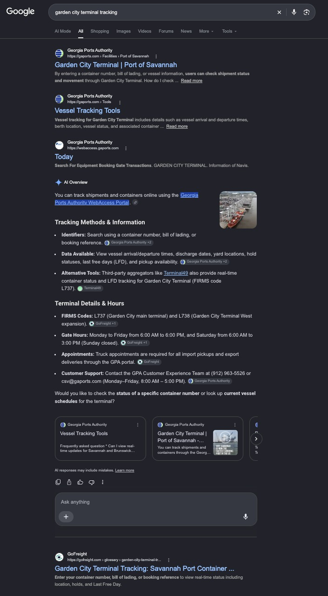
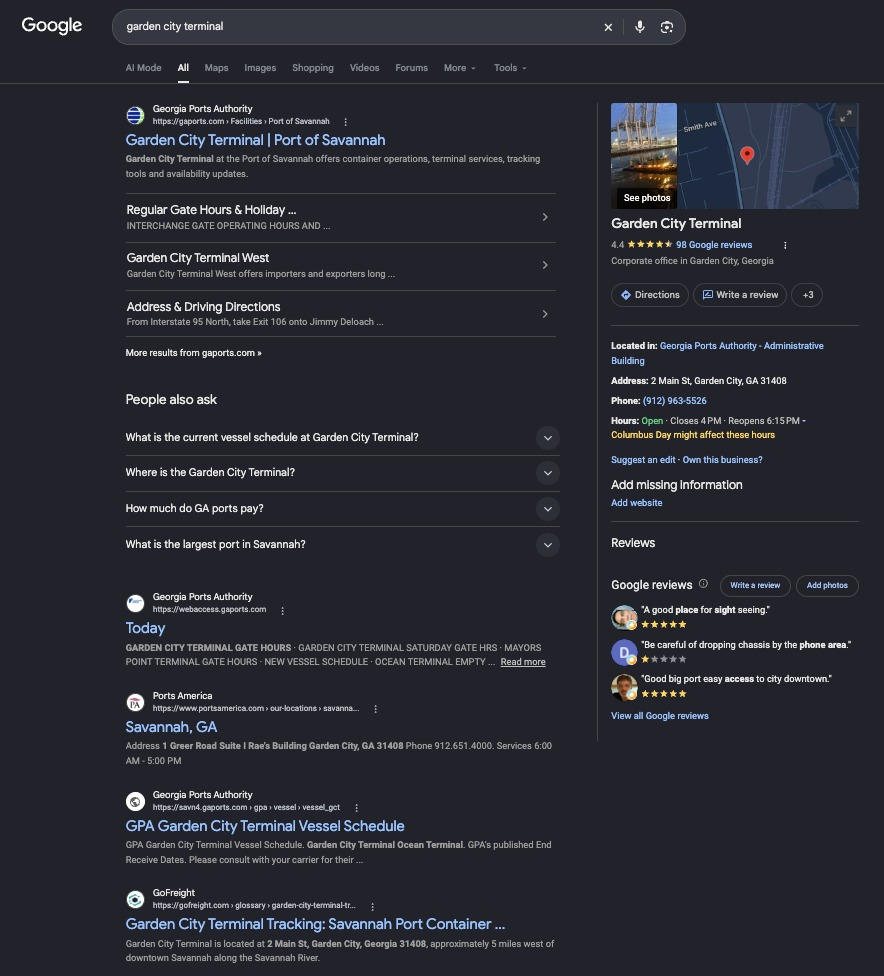

| # | Initiative | Status |
|---|---|---|
| Related SEO topics | ||
| 1 | October content batch: 30 of 30 refreshes published (14 Oct: 15 pages, 19 Oct: 14 pages, 28 Oct: the 5 data analytics tools guide). The batch covers the commercial comparison pages (best freight management software, best TMS software, Descartes alternatives, GoFreight vs Descartes, CargoWise pricing), the terminal tracking glossary pages and the customs guides. Every URL was submitted to IndexNow on publish. | DONE |
| 2 | Solution & Product pages: H2 and FAQ optimization across the 14 solution and product pages, with GoFreight's final comments applied. | DONE |
| 3 | Site fixes delivered (14 Oct): restored the ocean freight transit times post (it held the CFR article by mistake), a CFR refresh for its own glossary page, the Catapult product name corrected on three Magaya and CargoWise comparison blogs, and the ITS terminal staging duplicate flagged for removal. | DONE |
| 4 | Homepage redesign check (29 Oct): compared the new homepage with the old one for the core keywords. The new page drops the visible FAQ and most keyword copy; positions are checked again in mid November. | DONE |


Google search results captured on 12 Oct 2026. Click an image to see it full size.
| Segment | September Clicks | October Clicks | Click Δ | Δ % | September Impr | October Impr | Impr Δ |
|---|---|---|---|---|---|---|---|
| Exact "gofreight" | 944 | 835 | -109 | -11.5% | 2,044 | 2,290 | +246 |
| Branded related | 172 | 155 | -17 | -9.9% | 2,694 | 3,429 | +735 |
| Non branded | 8,018 | 7,245 | -773 | -9.6% | 1,525,633 | 1,785,089 | +259,456 |
| TOTAL | 9,134 | 8,235 | -899 | -9.8% | 1,530,371 | 1,790,808 | +260,437 |
| Google Search Console (web) | August | September | October | Δ % Sep → Oct |
|---|---|---|---|---|
| Impressions in generative AI features | 255,898 | 379,213 | 543,010 | +43.2% |
| Impressions outside AI features | 1,132,744 | 1,069,693 | 1,152,812 | +7.8% |
| All web impressions | 1,388,642 | 1,448,906 | 1,695,822 | +17.0% |
| AI features share of impressions | 18.4% | 26.2% | 32.0% | +5.8 pts |
Google Search Console export, Performance filtered to generative AI features vs all web results, gofreight.com property, date basis (August = Aug 2 to 31, as exported). These totals are date based, so they sit slightly below the page based impression totals in the other tables.
| Page | AI feature impr · September | AI feature impr · October | Δ | Clicks Sep → Oct (all search) |
|---|---|---|---|---|
| /blog/education/buyer-pays-freight-costs-unraveling-fca-in… | 30,738 | 67,874 | +37,136 | 159 → 383 |
| /blog/industry-insights/mastering-fob-in-shipping-a-comple… | 24,462 | 46,234 | +21,772 | 162 → 229 |
| /glossary/fob-shipping-point-vs-fob-destination | 8,701 | 22,382 | +13,681 | 30 → 50 |
| /blog/education/understanding-exw-meaning-in-international… | 16,178 | 25,204 | +9,026 | 48 → 94 |
| /blog/education/understanding-ex-works-in-international-tr… | 5,396 | 13,575 | +8,179 | 49 → 116 |
| /blog/customs-clearance-timeline | 4,559 | 12,159 | +7,600 | 106 → 170 |
| gofreight.com/ (homepage) | 8,395 | 13,050 | +4,655 | 1,422 → 1,220 |
| /blog/general/what-is-freight-forwarding-and-how-does-it-w… | 5,027 | 8,646 | +3,619 | 73 → 90 |
| /glossary/terminal-handling-charges-thc | 3,090 | 6,422 | +3,332 | 31 → 52 |
| /glossary/its-terminal-tracking | 1,559 | 4,567 | +3,008 | 201 → 243 |
Page level figures from the Search Console comparison export (Oct 1 to 31 vs Sep 1 to 30, generative AI features); page totals run slightly above the date based totals in the table above. Clicks are from all Google web search for the same page.
| Subfolder | September Clicks | October Clicks | Click Δ | Δ % | September Impr | October Impr | Pages Cited · September | Pages Cited · October |
|---|---|---|---|---|---|---|---|---|
| Blog | 3,471 | 4,263 | +792 | +22.8% | 1,107,080 | 1,305,192 | 89 (6,447) | 112 (7,478) |
| Homepage | 1,422 | 1,220 | -202 | -14.2% | 47,412 | 42,386 | 2 (618) | 2 (164) |
| Glossary | 3,731 | 2,176 | -1,555 | -41.7% | 305,193 | 369,958 | 2 (38) | 7 (63) |
| Solutions | 26 | 14 | -12 | -46.2% | 17,020 | 9,998 | 7 (69) | 9 (84) |
| Product | 53 | 59 | +6 | +11.3% | 10,231 | 11,176 | 9 (592) | 9 (669) |
| Pricing | 39 | 27 | -12 | -30.8% | 4,211 | 4,038 | 1 (1) | 1 (21) |
| Other (Company, Tools, etc.) | 392 | 476 | +84 | +21.4% | 39,224 | 48,060 | 63 (1,299) | 115 (1,404) |
| TOTAL (gofreight.com) | 9,134 | 8,235 | -899 | -9.8% | 1,530,371 | 1,790,808 | 173 (9,064) | 255 (9,883) |
Totals reflect the primary gofreight.com property (support / api / archive subdomains excluded per the filter). Pages Cited by AI = distinct pages cited as a source by ChatGPT, Perplexity, or Google AI in WorkDuo tracked responses that month, shown as pages (total citations).
NovaStacks Work flags each blog / glossary page from the content delivery tracker: 🆕 NS · Created = a new NovaStacks article (month it went live), 🔄 NS · Updated = an existing page NovaStacks last refreshed (latest update month; hover for the exact date). Pages with no flag are legacy GoFreight content NovaStacks has not touched. AI Citations = WorkDuo tracked AI responses citing this page as a source in the month.
| # | Page | NovaStacks Work | AI Citations · September | AI Citations · October | Δ | October Clicks | In Click Top 30? |
|---|---|---|---|---|---|---|---|
| 1 | /blog/why-freight-forwarders-need-specialized-software | 🆕 NS · Created Sep 2026 | 36 | 186 | +150 | 1 | no |
| 2 | /blog/freight-forwarder-tech-stack | 🔄 NS · Updated Oct 2026 | 92 | 205 | +113 | 0 | no |
| 3 | /blog/best-freight-management-software | 🔄 NS · Updated Oct 2026 | 507 | 618 | +111 | 2 | no |
| 4 | /blog/best-tms-software | 🔄 NS · Updated Oct 2026 | 572 | 655 | +83 | 4 | no |
| 5 | /product/integrations | 235 | 287 | +52 | 20 | no | |
| 6 | /blog/best-freight-customer-portal-software | 🔄 NS · Updated Oct 2026 | 189 | 218 | +29 | 10 | no |
| 7 | /blog/gofreight-platform-overview | 🔄 NS · Updated May 2026 | 528 | 550 | +22 | 26 | no |
| 8 | /blog/gofreight-vs-magaya | 🔄 NS · Updated Oct 2026 | 235 | 257 | +22 | 0 | no |
| 9 | /blog/cargowise-alternative | 🔄 NS · Updated Oct 2026 | 266 | 268 | +2 | 17 | no |
| 10 | /blog/nvocc-software-top-solutions | 🔄 NS · Updated Aug 2026 | 279 | 275 | -4 | 6 | no |
| 11 | /blog/tms-software-guide | 163 | 155 | -8 | 1 | no | |
| 12 | /blog/gofreight-reviews-testimonials | 🔄 NS · Updated May 2026 | 347 | 336 | -11 | 5 | no |
| 13 | /blog/solution/blog-customer-portal | 🔄 NS · Updated Jul 2026 | 274 | 262 | -12 | 3 | no |
| 14 | /blog/cargowise-vs-gofreight | 🆕 NS · Created Dec 2025 | 374 | 314 | -60 | 11 | no |
| 15 | gofreight.com/ (homepage) | 618 | 164 | -454 | 1,220 | yes |
The 15 pages with the most AI citations in October, ordered by the change vs September (biggest gainers first).
Canonical panel: the 11 commercial cluster terms, kept fixed month over month. For each keyword and month we take the main GoFreight page (the page with the most US impressions for that keyword) and its monthly average position, so when Google switches from one GoFreight page to another the shift is visible. Best position is the best monthly average across any GoFreight page with at least 10 US impressions (hover for the page). Sitelinks shown under the homepage (company, pricing, why GoFreight) are left out. All positions are monthly averages, lower = better.
| Core Keyword | Main page · September | Sep avg pos (month) | Main page · October | Oct avg pos (month) | Δ Position | Best position Sep → Oct | Summary |
|---|---|---|---|---|---|---|---|
| freight forwarding software | gofreight.com/ (homepage) | 1.8 | gofreight.com/ (homepage) | 1.4 | +0.4 ▲ | 1.8 → 1.4 | 1.8 → 1.4 on the homepage |
| freight management software | gofreight.com/ (homepage) | 12.2 | gofreight.com/ (homepage) | 4.8 | +7.4 ▲ | 12.2 → 4.8 | 12.2 → 4.8 on the homepage |
| freight management system | /blog/best-freight-management-software | 12.8 | /blog/best-freight-management-software | 13.6 | -0.8 ▼ | 12.8 → 13.6 | 12.8 → 13.6 on the listicle |
| freight management system software | gofreight.com/ (homepage) | 10.6 | gofreight.com/ (homepage) | 5.0 | +5.6 ▲ | 10.6 → 5.0 | 10.6 → 5.0 on the homepage |
| best freight forwarding software | gofreight.com/ (homepage) | 3.3 | gofreight.com/ (homepage) | 4.3 | -1.0 ▼ | 3.3 → 4.3 | 3.3 → 4.3 on the homepage |
| best freight management software | /blog/best-freight-management-software | 12.2 | /blog/best-freight-management-software | 16.2 | -4.0 ▼ | 12.2 → 16.2 | 12.2 → 16.2 on the listicle |
| air freight forwarding software | gofreight.com/ (homepage) | 1.9 | gofreight.com/ (homepage) | 1.8 | +0.1 ▲ | 1.9 → 1.8 | 1.9 → 1.8 on the homepage |
| global freight management system | /blog/best-freight-management-software | 11.1 | /blog/cargo-management-software | 26.3 | -15.2 ▼ | 11.1 → 14.2 | 11.1 → 26.3, shifted from the listicle to a GoFreight blog post |
| ocean freight management software | gofreight.com/ (homepage) | 8.0 | gofreight.com/ (homepage) | 3.9 | +4.1 ▲ | 4.8 → 3.9 | 8.0 → 3.9 on the homepage |
| sea freight management software | gofreight.com/ (homepage) | 5.2 | gofreight.com/ (homepage) | 4.8 | +0.4 ▲ | 5.2 → 4.8 | 5.2 → 4.8 on the homepage |
| container freight management system | /blog/cargo-management-software | 9.9 | /blog/cargo-management-software | 10.2 | -0.3 ▼ | 8.5 → 10.2 | 9.9 → 10.2 on the blog post |
| Emerging Keyword | Main page · September | Sep avg pos (month) | Main page · October | Oct avg pos (month) | Δ Position | Best position Sep → Oct | Summary |
|---|---|---|---|---|---|---|---|
| freight forwarding crm | /blog/best-logistics-crm-software | 4.5 | /blog/best-logistics-crm-software | 6.1 | -1.6 ▼ | 4.5 → 6.1 | 4.5 → 6.1 on the listicle |
| logistics crm software | /blog/best-logistics-crm-software | 17.2 | /blog/best-logistics-crm-software | 12.7 | +4.5 ▲ | 17.2 → 9.4 | 17.2 → 12.7 on the listicle |
| best tms software | /blog/best-tms-software | 25.1 | /blog/best-tms-small-business | 12.0 | +13.1 ▲ | 2.8 → 3.6 | 25.1 → 12.0, shifted to another GoFreight listicle |
| freight forwarder software | gofreight.com/ (homepage) | 1.9 | gofreight.com/ (homepage) | 1.3 | +0.6 ▲ | 1.9 → 1.3 | 1.9 → 1.3 on the homepage |
| freight software | gofreight.com/ (homepage) | 1.5 | gofreight.com/ (homepage) | 1.6 | -0.1 ▼ | 1.5 → 1.6 | 1.5 → 1.6 on the homepage |
| freight tracking software | /blog/freight-tracking-software-comparison | 11.5 | /blog/freight-tracking-software-comparison | 9.0 | +2.5 ▲ | 4.2 → 9.0 | 11.5 → 9.0 on the listicle |
Tracked alongside the canonical panel with the same main page and monthly average method.
AI referred sessions went from 651 (September) to 585 (October), -10.1%. This section shows which engines and which pages moved. The source table sums sessions per AI source, so its total can differ by a session or two from the monthly total.
| AI Source | September | October | Δ |
|---|---|---|---|
| ChatGPT | 501 | 391 | -110 |
| Gemini | 72 | 134 | +62 |
| Claude | 27 | 14 | -13 |
| Perplexity | 33 | 30 | -3 |
| Copilot | 19 | 14 | -5 |
| TOTAL AI sessions | 652 | 583 | -69 |
utm_source=chatgpt.com tag and without referral data, so analytics could no longer attribute those visits to ChatGPT. OpenAI confirmed it was a known bug and the fix rolled out from 15 October (Search Engine Land, 20 Oct 2026). GoFreight's GA4 dips in the same window: ChatGPT sessions averaged 14.4 a day from 24 Sep to 7 Oct, fell to 7.7 a day from 9 to 14 Oct, and came back to 12.9 a day from 16 to 29 Oct. Against the early October rate, the bug window accounts for about 33 sessions of the 110 fewer recorded ChatGPT sessions (501 to 391); after the fix ChatGPT sessions came back close to, but not fully at, the early October level.| ChatGPT landing pages that lost recorded sessions | September | October | Δ |
|---|---|---|---|
| / | 126 | 92 | -34 |
| /glossary/ocean-carrier-alliances | 17 | 2 | -15 |
| /pricing | 14 | 5 | -9 |
| /blog/education/shipping-container-dimensions-everything… | 8 | 0 | -8 |
| /glossary/cargo-insurance | 5 | 0 | -5 |
| /knowledge/gofreight-account-security-measures | 5 | 0 | -5 |
| /knowledge/how-to-perform-an-internal-bank-transfer | 5 | 0 | -5 |
| /product/freight-billing-accounting | 9 | 5 | -4 |
| ChatGPT landing pages that gained sessions | September | October | Δ |
|---|---|---|---|
| /blog/operational-metrics-for-freight-forwarder-performa… | 0 | 4 | +4 |
| /knowledge/how-to-create-a-new-air-export-shipment-for-e… | 0 | 4 | +4 |
| /knowledge/which-user-permissions-can-be-customized-in-g… | 0 | 4 | +4 |
| /knowledge/gofreight-guides | 1 | 4 | +3 |
| /glossary/container-freight-station-cfs | 0 | 3 | +3 |
| /knowledge/how-to-batch-import-journal-entries | 0 | 3 | +3 |
| Metric | September 2026 | October 2026 | Change | Source |
|---|---|---|---|---|
| AI Platform Sessions (GA4) | 651 | 585 | -10.1% | GA4 direct |
| AI Visibility (non brand) | 33.8% | 37.7% | +3.9 pts | WorkDuo |
| GoFreight Pages Cited by AI (all properties) | 195 | 276 | +81 | WorkDuo citations |
| Total AI Citations of GoFreight Pages | 9,375 | 10,165 | +8.4% | WorkDuo citations |
AI Platform Sessions from GA4 direct (property 373075091). AI Visibility (non brand) from the WorkDuo API. Pages Cited / Total Citations recounted from the WorkDuo API (occurrence count, 28 non brand + 11 branded prompt panel, project cmhk59aw9001mlo33c3t8n3rj).